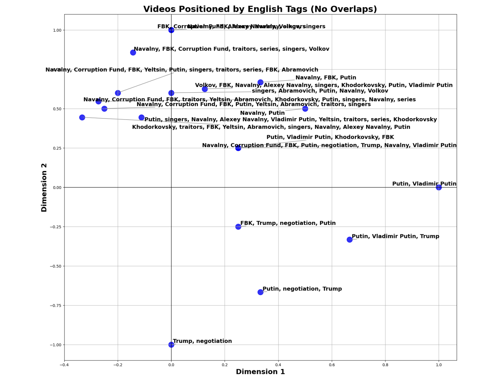
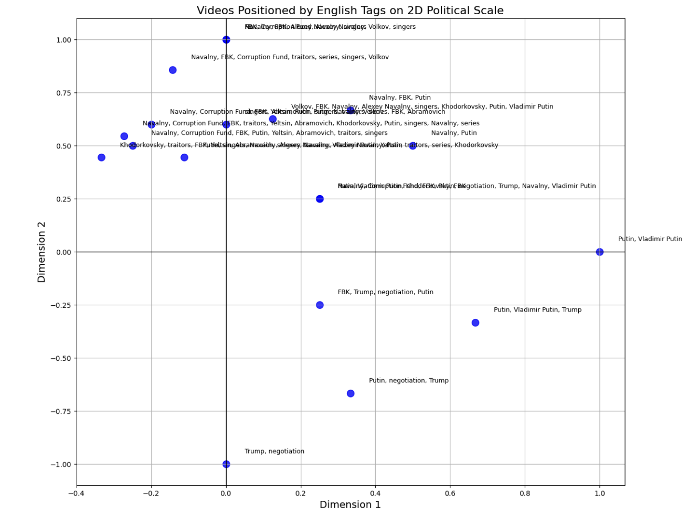

After uploading the libraries and identifying the most popular tags, we categorize the tags into four categories and assign each category an axis:
Our code:
import pandas as pd
# Load your top tags
top_tags_df = pd.read_csv('top_tags.csv')
# Define the categories, their tags, and their coordinates
categories = {
"Putin": {
"tags": ['путин', 'владимир путин'],
"coordinates": (1, 0)
},
"Navalny+FBK": {
"tags": ['фбк', 'навальный', 'певчих', 'фонд борьбы с коррупцией', 'волков', 'сериал',
'алексей навальный'],
"coordinates": (0, 1)
},
"What happened in 1990s?": {
"tags": ['предатели', 'ходорковский', 'абрамович', 'ельцин'],
"coordinates": (-1, 0)
},
"Trump’s role": {
"tags": ['трамп', 'переговоры'],
"coordinates": (0, -1)
}
}
# Prepare lists to build a new DataFrame
organized_tags = []
for index, row in top_tags_df.iterrows():
tag = row['Tag'].strip().lower()
count = row['Count']
found = False
for category, data in categories.items():
if tag in data['tags']:
organized_tags.append({
'Tag': tag,
'Count': count,
'Category': category,
'Coordinates': data['coordinates']
})
found = True
break
if not found:
pass
# Create a new DataFrame
categorized_tags_df = pd.DataFrame(organized_tags)
# Save it to a CSV
categorized_tags_df.to_csv('categorized_tags_with_coordinates.csv', index=False)
print("Done! Saved categorized tags to 'categorized_tags_with_coordinates.csv'")
After executing this step, we have this file = categorized_tags.csv - this file contains info about what category we have attributed to every tag. And we have this file = Categorized_tags_with_coordinates.csv - this file has tags, categories, and coordinates for every video.
Now, we design a code that creates a dictionary that provides for every tag specific coordinates in a python format. The coordinates are calculated based on the average of all tags attributed to one video. We visualize it into a graph.
Our code: import pandas as pd import matplotlib.pyplot as plt # Load videos and categorized tags ... plt.show()
The Graph we see:
We have decided to translate it into English. To do so, We have uploaded the translating library and translated all tags from Russian into English.
Our code:
import pandas as pd
from deep_translator import GoogleTranslator
...
print(" Done! Translated tags saved to 'categorized_tags_with_coordinates_translated.csv'")
Now, we have this file = 'categorized_tags_with_coordinates_translated.csv' with all tags, being categorized and translated into english. We note that now, the relevant tags can be found under a column named Tag_English.
Now, we run the same code to produce a graph but using English tags, and also adjusting the size of the nodes to a slightly bigger one.
We really liked this graph. We liked everything about it. However, the titles are overlapping each other making it impossible to read them. We have decided to make the font a bit bigger, and make sure there are no overlappings of the titles.
To do so, we have uploaded a special library for text adjustment, and then used it to make sure the titles don’t overlap.
Our code: import pandas as pd import matplotlib.pyplot as plt from adjustText import adjust_text ... plt.show()
Our graph:
We identify all channels that have uploaded the videos which we are analyzing, and collect them into the file named unique_channels.csv. Then, we attribute to every unique channel a color. We make sure that the color is not in the [n.p.float64] format but in a format convenient to use the library matplotlib in the future. Because Kira learns from her mistakes.
Our code: import pandas as pd import matplotlib.pyplot as plt ... plt.show()
We have this nice picture and this file = videos_with_colors.csv - which contains video Id, channel, and color.
Here, we merge our most important file = videos.csv with videos_with_colors.csv - to create a file which will unite: Video ID, Channel, and Color. (Simultaneously, we make sure that the titles don’t overlap and the data about the tags is extracted from the English version)
Unfortunately, we again run into the problem with the colors. We had to upload an additional Library named numpy to fix it.
Our code: import pandas as pd import matplotlib.pyplot as plt from adjustText import adjust_text import matplotlib.colors as mcolors import numpy as np ... plt.show()
Our Graph:
This webpage was generated to document the full process of our SNA group project using GitHub Pages.
Trigger Pages rebuild